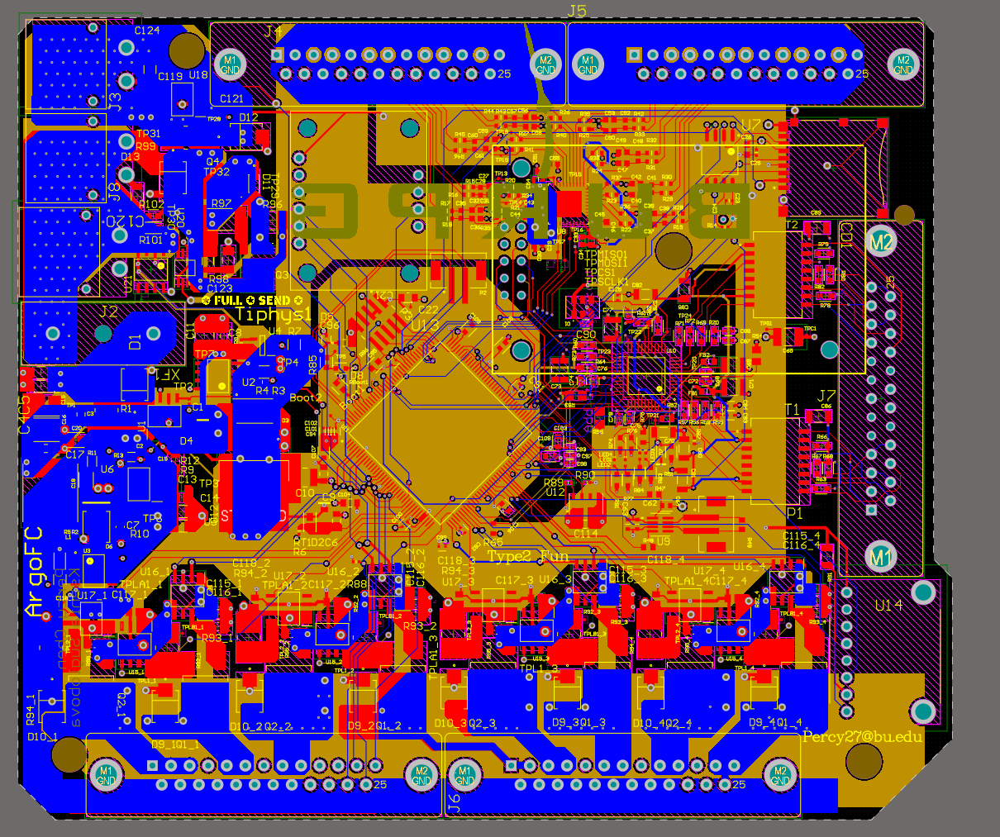
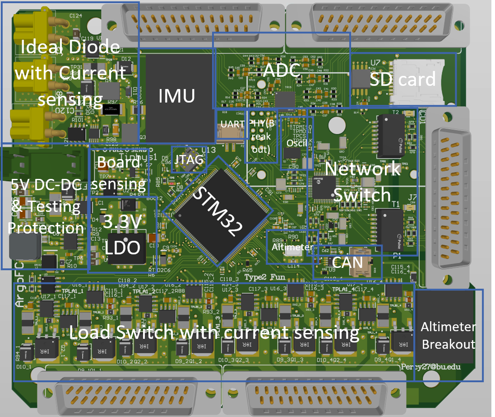
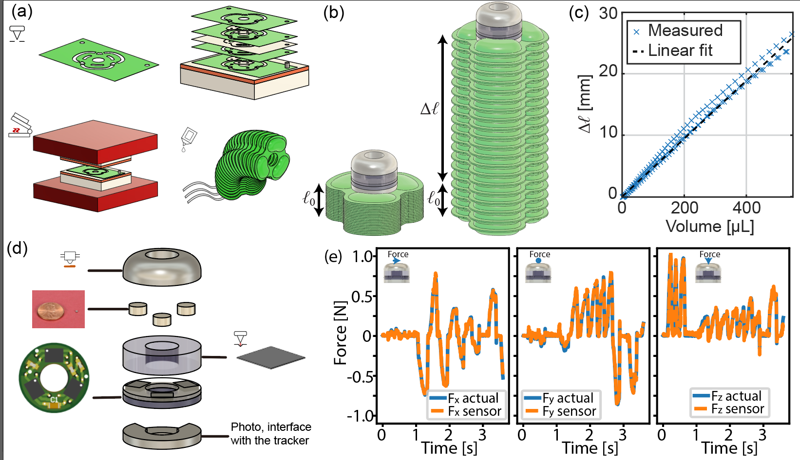
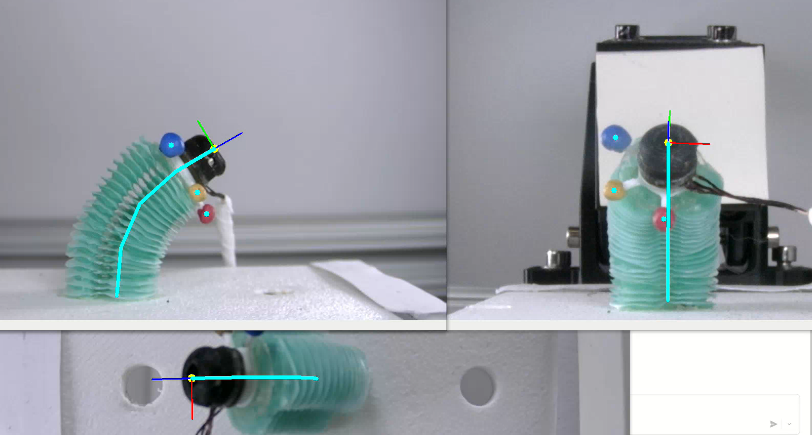

🚀Bipropellant rocket Icarus@BURPG 2023.11 ~ 2025.3
First liquid bipropellant rocket BURPG, 13k feet apogee with take-off thrust of ~2200 lbs(world record for collegiate rocket take-off thrust), fully recovered with our recovery system
I worked on the PCB controller for Ground system, Ground System integration, Separation and Recovery’s electrical system, Firmware using Freertos, WebGui (Shown below) and Field test op(As Red team member)
BU News link
🚀 Argo @BURPG 2025.4 ~ Now


Argo is Boston University Rocket Propulsion Group’s (BURPG) flagship high-altitude vehicle designed to reach 100,000 ft following the success of Icarus. With a dry mass of 135 lbm and an 8-inch outer diameter, Argo represents a significant leap in collegiate aerospace engineering.
A key innovation in Argo is its closed-loop controlled COPV (Composite Overwrapped Pressure Vessel) system integrated into the fuel line. This advanced control architecture actively regulates propellant tank pressure in real-time
I'm the Engineering leader & Avionic team leader for this project, I designed the avionic system for argo and I’m currently leading the design for one of the Flight Computer PCB, a 4 layer PCB with a STM32H743, BMS, Protection circuit(Efuse and Fuse), Ethernet switch, 2 different Load Switches (Full Bridge Driver and Constant current solenoid driver), Onboard sensing, Delta-Sigma ADC, CAN bus, IMU and Altimeter.
🚀 Daedalus Controller @BURPG 2023.11 ~ 2025.2
Daedalus (Ground Support System Name of Icarus) handles important operation procedure such as Propellant loading, Data acquisition, Engine Ignition and Vehicle Main Valve Control.
I owned the full-stack development process. This encompassed circuit simulation (LTspice/PSpice), schematic capture, 4 layers PCB layout (Altium Designer), validation through two formal design reviews and integration to our firmware and GUI, culminating in a multi-purposes controller deployed for launch operations.k
🤖 Surgical robot research @Morphable Biorobotics Lab


I worked on electronic hardware, Close-loop controller, signal processing, and haptic & GUI(Graphical User Interfaces) for a soft robot, designed for minimally invasive surgery (MIS), with Prof. Ranzani and PhD Candidate Leonardo Zamora at Morphable Biorobotics Lab.
1. Designed an 8 channels real-time data acquisition system with customized PCB, BLDC motor driver and ROS2 firmware
2. Designed a 6 DOF(Degrees of Freedom), 7mm diameter, high precision (±5mN) biocompatible force sensor using magnetometers with customized PCB, calibrated it using Data-Driven Modeling with a FCNN(Fully Convolutional Neural Network)
3. Implemented a 3-camera position and trajectory tracking system
4. Collaborated with Leonardo and Shresth, implemented inverse kinematic model and used the force and position feedback to enable close-loop control for the robot. Contributing to a journal paper currently in preparation.